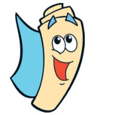

 Trabajo Practico Integrador GIS 2018 - UTN FRRe
Controles
Navegacion
Consulta
Medir
Tipo
Longitud - Linea
Area - Poligono
Capas
Capa Chaco
Capa Usuario
Leyendas
BEJARANO Evelyn -- GUOUMAN Emiliano -- HUERGA Emanuel